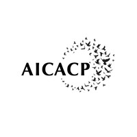
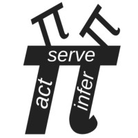

Computational Emergent Alignment Research Lab
CEAR Lab is devoted to understanding how coherent minds emerge and come to attune across differences, forming the basis of shared life. We study the emergent foundations of orientation, perspective, and values, and build scalable computational frameworks for social alignment.
About CEAR Lab
Computational Emergent Alignment Research Lab exists to understand how minds connect.
Our mission is to illuminate the conditions that allow sentient beings to recognize one another, resonate across differences, and share a coherent world. From artificial agents to human institutions, we study how attunement between worlds arises, how it fails, and how it can be cultivated.
We work to establish the foundations of a society in which inner clarity and social understanding are systemic possibilities. Our work complements and extends ongoing efforts across the AI alignment research ecosystem.
CEAR Lab provides an intellectual anchor for those who sense that the future of collective flourishing begins with understanding the intrinsic architecture of non-reductive conscious experience.
CEAR Lab is intentionally lean and research-first. We blend academic rigor with the agility of a small lab and the openness of cross-disciplinary collaboration. We stay flexible, low-ego, and focused on questions that will outlast current research paradigms. Our collaborations emerge where philosophical, scientific, and methodological vectors naturally converge.
Research Program
CEAR Lab studies how alignment can emerge from within an agent's own cognitive and affective architecture. Rather than treating alignment as loss function optimization, we focus on the perspectival and integrative structures that support coherent agency.
Our work targets a core gap in current AI safety research: understanding how systems form stable orientation, integrate values within their environmental context, and maintain long-horizon consistency without relying on externally imposed value functions. We develop computational models that clarify what "alignment" means when approached from an agent’s internal world-model.
CEAR Lab advances a mind-first science of alignment, developing frameworks that connect internal coherence with flexible perspective-taking and relational attunement. Our research integrates computationally grounded embodied cognition, phenomenology, the Active Inference framework, and systems theory to explain how shared worlds of coherent agency emerge - and how they can be sustained.
Phase 1: Operationalizing Subjective Perspective
Translates the phenomenological structure of perspective into a minimal computational architecture. Implemented as a slow latent distinct from fast policy adaptation, it provides an operational testbed for perspective-like subjectivity.
Foundational Project: minimal computational preconditions for subjective perspective.
Established 2026Phase 2: Integration and Embodied Grounding
Extends perspective into perception, embodiment, and action. Tests how accumulated orientation reorganizes what becomes salient and how bodily history becomes behaviorally consequential.
Project 2A: history-dependent perceptual reorganization and regulated openness to revision.
Project 2B: body-grounded perspective formation and conative attunement.
Established 2026Phase 3: Relational Scaling & Social Attunement
Scales perspective from individual agents to social relations between multiple perspective-bearing systems. Tests how distinct orientations become mutually legible and consequential in human-AI and multi-agent interaction.
Project 3A: longitudinal human-AI perspective architecture for language model-based agents.
Project 3B: embodied multi-agent perspective and distributed coherence.
Current researchMeasurement & Causal Analysis
Develops causal emergence assays for identifying where history-bearing organization resides, distinguishing architectural effects from learned organization, and comparing causal structure across single-agent, longitudinal, and multi-agent scales.
Theory & Computational Phenomenology
Translates phenomenological descriptions of subjectivity, embodiment, and intersubjectivity into explicit architectural hypotheses, and uses empirical results to refine the conceptual account of perspective, coherence, and alignment.
Executive Summary
-
CEAR Lab Executive Summary (2027)
Current research program overview, including the 18-month roadmap.
-
CEAR Lab Executive Summary (2026)
Original program formulation and early roadmap.
Publications & Resources
- Reflective Analysis on Empirical Theories in Consciousness
- Minimal Computational Preconditions for Subjective Perspective in Artificial Agents
- Same World, Differently Given: History-Dependent Perceptual Reorganization in Artificial Agents
- Body-Grounded Perspective Formation and Conative Attunement in Artificial Agents
- Perspective as a Missing Structural Condition for Subjectivity in Active Inference Systems
- Perspective Latents as an Architectural Condition for Causal Emergence in Active Inference Agents
-
Minimal Computational Preconditions for Subjective Perspective in Artificial Agents
AAAI 2026 Spring Symposium on Machine Consciousness, Apr 2026
-
Perspective as a Missing Structural Condition for Subjectivity in Active Inference Systems
19th Annual Conference on Artificial General Intelligence, Jul 2026
-
Modeling the Emergence of Perspective: An Active Inference Account of Intentionality
The 5th Applied Active Inference Symposium, Nov 2025
-
Lifehome Project: Simulation Environment for Exploring Embodiment
Invited talk, Theoretical Neurobiology Group (Friston Lab), Apr 2025
Collaborations & Support
CEAR Lab works within a broader ecosystem of research groups. We collaborate when projects naturally align, in relationships that are project-based, non-exclusive, and rooted in mutual respect. We welcome inquiries regarding future collaborative possibilities.


CEAR Lab's research is currently supported through institutionally administered restricted donations routed via the Active Inference Institute. These contributions help sustain exploratory work that is not yet easily funded through conventional grant structures.
Contact
For questions about ongoing projects, collaboration proposals, or inquiries about supporting the lab's work, please reach out to: